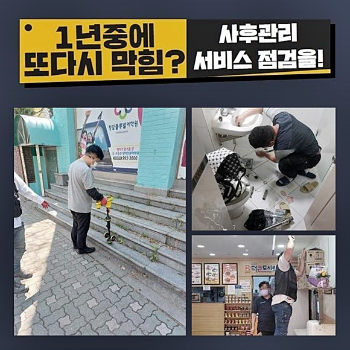
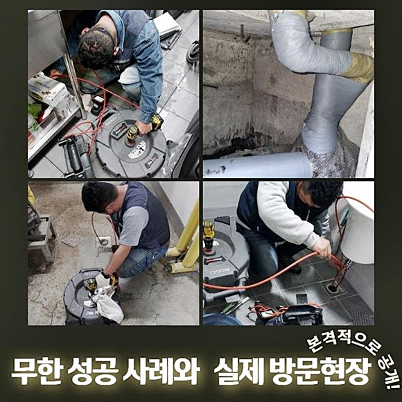
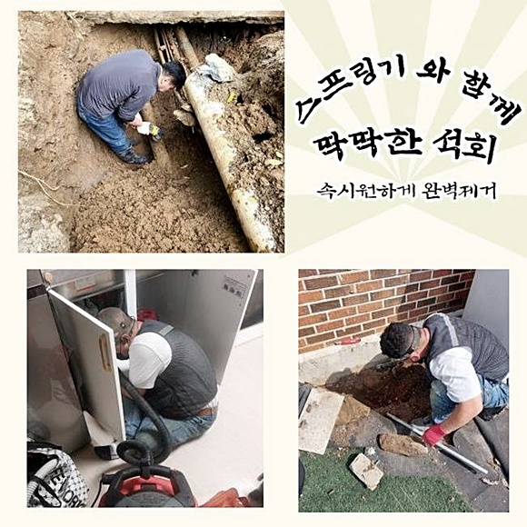
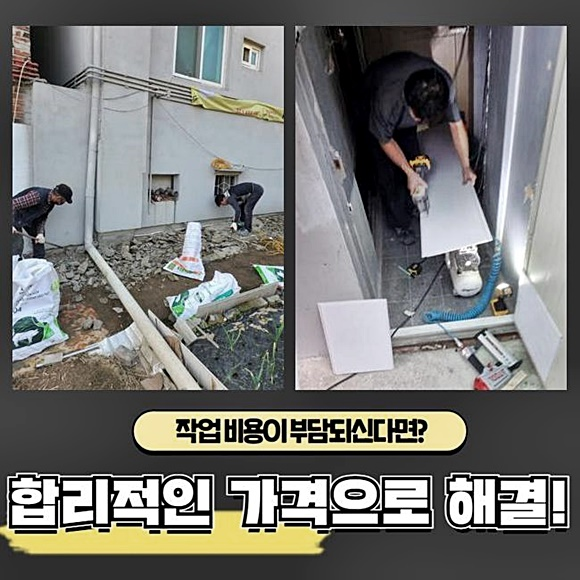
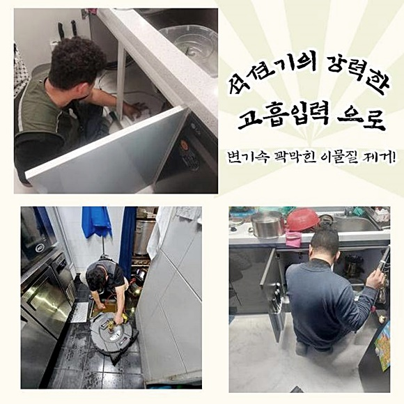
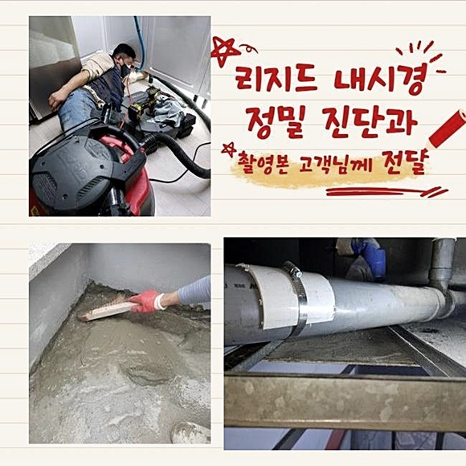

🏠 부평구 청천동화장실막힘 일신동 배수구뚫기 물샘전문업체
용인 싱크대막힘 전문 시공 후기

📋 작업 개요
- 위치: 용인
- 서비스 유형: 싱크대막힘, 하수구막힘, 배관막힘, 누수수리, 역류해결, 뚫는업체, 배관청소, 고압세척
- 작업 일시: 2024. 6. 15. 10:25
- 업체명: 하수구수사대 (010-5615-2118)
🔍 문제 상황
부평구 청천동화장실막힘 일신동 배수구뚫기 물샘전문업체
이전에 내부 어딘가 하수관에 장애가 생겼던 경험이 있었거나 바로 이 지점의 배관장애 증상으로 인하여 전문업체들을 호출해야되는 상태라면 고객이시라면 방치마시고 차분하게 전반적인 작업의 항목들을 열거해드릴게요
의뢰를 하신다음 전문가들이 내방해서 일단 집안측의 하수구 등에 결함으로인해 세척해야되는 구간을 내시경장치로 점검하고 어떤 방식으로 해결까지 닿는지 전문가들에게 들어봐야하죠
배관내부에 방해요소를 체크하고 세척을 맡기실건지 다른 측면으로 방치할것인지 의뢰인분이 결정하시면 된답니다
문제들이 양산되었을때 먼저 고객분이 자가적인 대처를 수행하는게 대다수입니다
알맞는 조치를 정확히 진행되지 못하면 지속적으로 유사한 막힘문제가 발현되는 사실들을 잘 모르십니다
생활 중에 하수관에서 수도가 정체되는 것이 목격되면 조속하게 전문업체와 해결방안을 강구해보세요!
고객분의 배수장애의 불편을 듣고 방문드렸어요
화장실의 시설과 씽크대쪽도 온전히 사용할 수 없다고 말씀하셨습니다
배수관이 균열되어서 문제들이 생겨난것이면 하수구를 점검하고 작업해드려요
대부분 배관장애은 내부로 들어가선 안되는것이 잔여물들이 흐르며 쌓일 시에 집수시설로 빠지지못하고 고이게되어 증세들이 발현되게 되요

🔎 원인 분석
💡 전문가 진단: 정밀 진단 장비를 사용하여 슬러지의 고착 여부를 판명하고 타격/세척 작업을 실시했습니다.
문제들이 야기되면서 조속한 해결들이 필요할 때 전문인의 시정능력들도 눈여겨봐야하지만 놓치면 안될것이 장비들을 구비해놓았는지 입니다
이곳저곳을 확인해보았더니 내측의 하수관로가 타 가지배관으로 보이는 배수관과 이어진 상태를 확인했습니다
우선 하수관 결함적인이 심해진 곳이라고 전달해주셨던 세면대와 연결된 배관을 체크하고자 심부에 이르기까지 내시경을 써서 어째서 증세가 발생되었나 원인파악들을 실시해줍니다
내시경으로 진단을 거쳤더니 부분마다 통수진행을 막는 요소들이 침전된 탓에 역류되어버리는 문제들이 연출된걸 곧장 알아차렸죠
배수관에 퇴적되어있던 잔해들을 사라지게끔 배수관으로부터 배출해주어 세척효과를 톡톡히 보기위해서 흡입력이 강한 석션으로 1차적인 세척을 진행했습니다
강력한 석션장치를 운용하므로 이로써 안쪽에 있는 이물을 빨아당깁니다
입구부터 공기들이 빠지지않게 조여주고 뭉친 부유물들을 쉽지않았지만 외부로 배출해줬죠
화장실 내부는 각종 세안용품 유분기가 있는 용품들 잔여물이 하수관에 쌓일 시에서 고착되어 막힘문제를 야기시킵니다
막힘을 예방하기위해 욕실공간에서 이용하시고 난 다음 마무리를 할때 육가를 확인해주시고 정리해주시면 좋고 정리하실 때에는 하수관으로 투입되는 일 없게 꼼꼼하게 마무리해주시면 되요
간헐적으로라도 관리까지 해주어야 하죠
육가부품을 올려서 트랩부에는 머리카락등등 쌓여있습니다

🔧 작업 과정
몸집이 제법있는 물건과 잔해물 유분기탓에 배수관 곳곳이 지저분했어요
깊은곳도 청소해주기 위해서는 앞전까지 썼었던 석션을 써서 세척을 하지않습니다
여타 장비를 운용하여 청소할 계획이였죠
해당 과정에서 하수관에 남겨진 오염물과 머리카락들을 제거할 목적으로 샤프트장치를 가용해줍니다
샤프트는 헤드부에 노커가 회전하며 조속히 고착된 것을 제거시키는 이점을 탑재했으며 벽측에 흡착되어있는 잔해물이 잔존해있을 시 플렉스샤프트기를 가용해 깨끗히 이물을 제거시킵니다
샤프트기 사용으로 사슬부에 걸려지는 고착물이 발생될 때 배출해주고 석션도 투입시켜서 꾸준히 세척해줘요
싱크대쪽과 욕실내부의 하수도와 맞닿은 부분들도 깔끔하게 잔여물을 제거해주는 작업도 물론 빠트리지않았죠
허나 전면적으로 작업해야되는 부분이 있었는데요
주방쪽 문제들도 제거시키기위하여서 싱크대에서 연결된 라인들의 수리가 실시되어야 했는데요
이 부분을 의뢰인에게 내시경으로 정확히 확인해보시게끔 내시경장비를 써서 확인시켜드렸죠
고객분께서는 조속한 조치를 바라고 계셨어서 하단부의 주름진 관로를 하수도에서 꺼내주었어요
싱크볼의 아래부분에 관로에 이물질들이 쌓이게되며 알맞은 해결을 하고자 분리를 해주었어요
이 위치를 시작으로해 검수를 진행할 목적으로 배수관의 모습들을 관찰해보니 머리카락등등나 이물들이 딱딱해져서 흡착된것을 확인했어요
침전된 곳을 재빨리 제거하며 깨끗히 변신하도록 만들어주었습니다
진행 중에 하얀이물들이 고착되어 오염된 부분들이 있는 까닭에 의뢰인분에게 저희전문가에게 문의하시기 전에 사용한 조치가 있는지 질문드리니 인터넷에서 클린액을 구매하시어 배수구로 부었다고 알려주셨는데요
스스로의 힘으로 조치해보다가 잘못되면 복구가안되는 문제로 바뀔 수 있기에 전문진의 해결이 수반되어야 합니다
하수관 속으로 전문도구를 넣어주고 작업하기위해 일부분 타공까지 마치고 하단에 메인배관으로 전문기기를 투입하여 마저 작업하죠
작업을 해줄때에는 내시경으로 안측을 체크하고 작업에 임하기에 걱정할 사항들은 결단코 없습니다


✅ 작업 완료
세척 과정에서 탈거된 흡착물을 마지막에 석션장비로 수습해주면 이렇게나 깨끗히 배수로를 볼 수 있어요
배수속도가 저하되어도 문제에대해 우려할 일이 없어요!
모든 배수장애들을 고쳐드립니다
여타 전문가들이 마무리짓지 않고서 도중하차했던 적이 있으실 경우 주저없이 저희의 전문진들에게 연락주시기 바래요!
고객맞춤 서비스를 실시해드리고 증상들이 생기셨다면 언제든지 편히 연락하시면 최선을 다해 응대하겠습니다




⚠️ 베란다 누수 및 방수 관리 방법
- ✅ 비가 많이 올 때 창틀 주변이나 아래층 천장에 얼룩이 생기는지 정기적으로 확인해 보세요.
- ✅ 우수관 주변 실리콘 마감이 들뜨거나 깨진 틈새가 있는지 손상 여부를 수시로 체크하세요.
- ✅ 베란다 바닥 타일의 줄눈(메지)이 소실되면 그 틈으로 물이 침투하여 누수가 유발됩니다.
- ✅ 누수 의심 증상 발견 시 방치하면 아래층 손실이 커지므로 즉시 전문가의 진단을 받으십시오.
💡 핵심 정리
- 확실한 장비 작업(내시경 점검 및 샤프트 스케일링)으로 원인을 뿌리 뽑습니다.
- 작업 후 1년 이내에 동일한 부위 재발 시 100% 무상 A/S 서비스를 보장합니다.
- 서울 · 경기 · 인천 전 지역에 24시간 언제든 긴급 출동할 수 있도록 항시 대기 중입니다.
❓ 자주 묻는 질문 (FAQ)
🚨 용인 싱크대막힘 문제로 고민이신가요?
정확한 원인 진단과 확실한 시공으로 재발 없는 해결을 약속드립니다.
24시간 긴급 출동 | 서울 · 경기 · 인천 전지역 | 1년 내 재발 시 무상 A/S